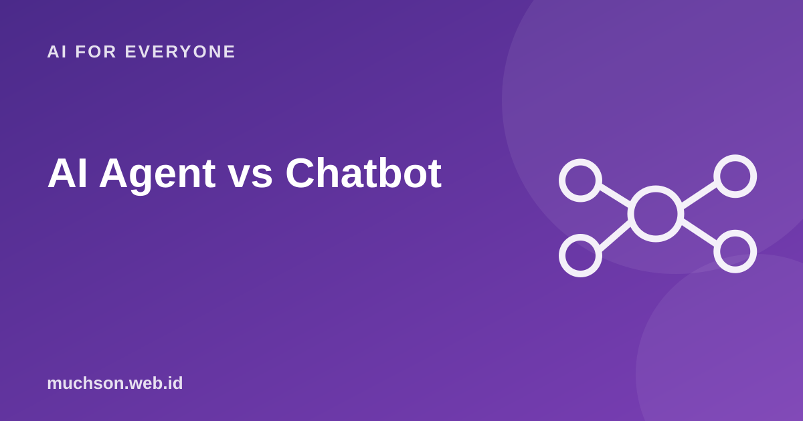

Home › Articles › AI for Everyone
AI for EveryoneAI Agent vs Chatbot: What's the Difference and When to Use One
The term AI agent is everywhere, sometimes used for anything. The core difference is simple: a chatbot gives answers, an agent finishes tasks by taking actions. And the more actions, the more oversight matters.

The difference in one picture
Text description of the diagram
Chatbot
- Receives a question
- Gives an answer
- Stops after answering
- Changes nothing outside the conversation
- Risk: a wrong answer
AI agent
- Receives a goal
- Plans the steps
- Uses tools (search, send, change data)
- Checks the result, repeats if needed
- Risk: a wrong action in the real world
How an agent works
Text description of the diagram
- Understand the goal
- Plan the steps
- Use a tool
- Check the result
then back to the first step.
Match it to your need
Safe rules for agents
Principle
Many business problems are actually solved by simple automation. Choose the simplest tool that does the job, then add sophistication when it proves necessary.
FAQ
Is ChatGPT an agent?
Its basic chat interface is a chatbot. With features like web search, code or integrations it can behave like an agent. The line is getting blurrier.
Can an agent be trusted to work alone?
For low-risk, clear tasks, yes. For important actions, keep a human involved.
What is a simple example of an agent?
An assistant that reads incoming email, classifies it, fills in a spreadsheet and asks for your approval before replying.